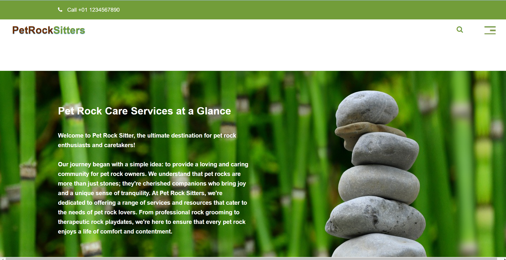

MY PROJECTS
Connect Four Game
The project is a web-based Connect Four game using HTML, CSS, and JavaScript. Players take turns placing colored discs in a grid, aiming to connect four in a row horizontally, vertically, diagonally, or anti-diagonally. The game features responsive design, a restart button, and displays the current player's turn. It's a visually appealing and interactive implementation of the classic game.
PLAY GAMEPet Rock Sitters
Project Showcase: PetrockSitters.com I am proud to present PetrockSitters.com, a culmination of my dedication to excellence in the realm of web development. This website, meticulously crafted as part of the coursework in Human-Centered Computing, stands as a testament to my commitment to merging technological innovation with a genuine passion for animal welfare.
Read MoreHospital Management System
There will be 8-10 pages designed with HTML, CSS and BOOTSTRAP. Database will be created with SQL concept. Each page will be connected to database using PHP and There will be both inputs and outputs in each page. Features-LOG IN ACCESS,NAVIGATION BAR,NURSE, PRESCRIPTION, WARD, BED, PATIENT, MEDICINE, DOCTOR, SUPERVISOR,RECEIPT etc.
Read MoreBrilliant Retail SMS
I proudly present the Brilliant Retail SMS website—a project I personally designed and implemented. This platform, crafted with Bootstrap, HTML, CSS, and JavaScript, offers a user-friendly interface for seamless bulk SMS transactions. Discover the convergence of cutting-edge technology and my expertise in this efficient and secure solution.
Read More